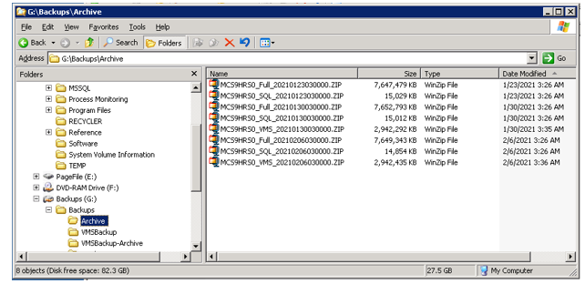

Verifying MCS Tapeless Backup
Purpose and Application
This document describes how to verify that MCS tapeless backups, as configured in FES-03-600, are occurring. Backups are scheduled every Saturday morning.
Safety
 |
 |
Procedure
- Log onto the MCS Windows Server as Administrator.
- Open Windows Explorer.
- Navigate to G:\Backups\Archive

- Verify the most recent files were written last Saturday. Each backup has a set of three files.
- MCS, andlt;system, andgt;_Full_, andlt;date and time, andgt;.zip – Full backup of the Windows server.
- MCS, andlt;system, andgt;_SQL_, andlt;date and time, andgt;.zip – Backup of the SQL database.
- MCS, andlt;system, andgt;_VMS_, andlt;date and time, andgt;.zip – Full backup of the VMS server.
Required Training
Before performing this work instruction, applicable personnel must be trained by an authorized trainer on the required training contents listed in this document.
References
- FES-03-600 Adding Tapeless Backup Capability to MCS Systems.
Document Classification
- Asset Protection and Stability
- Organization and Training
Collaboration
|
Country Group |
Role |
Name |
|
Americas North |
Forming Electronics Specialist |
Dan Knuckles |
|
Europe |
Forming Electronics Leader |
Remko Beckers |
|
Central Europe |
Regional Leader Forming Electronics |
Ruud Bormans |
|
France - Spain |
Jean-Pierre Locato |
Jean-Pierre Locato |
|
Latin America |
IS Machine Leader |
Miguel Morales |
|
Engineering - Forming |
Associate Engineer |
Jose Gonzalez |
|
Global |
Global Forming Electronics Leader |
Franklin Barrios |
Revision History
| 2021-03-04 |
Originally Released as Process Control SOP-21-001 |
| 2021-10-12 |
Approved by Franklin Barrios, Global Leader FES Network. SOP changed into GMF Work Instruction MAC-03-424 |
| 2022-05-09 |
Approved by Franklin Barrios, Global Leader FES Network. Moved to GMF Site as FES-03-601 |